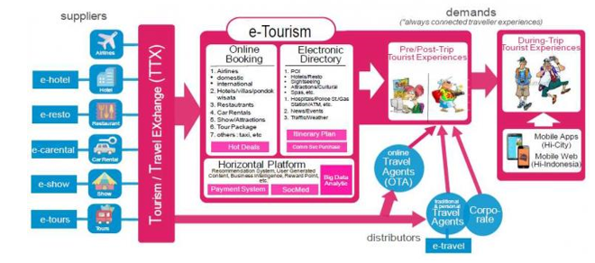

Ni Wayan Sumartini Saraswati
Desember, 2023
TEKNOLOGI BIG DATA UNTUK PARIWISATA
TEKNOLOGI BIG DATA
Big Data terkait dengan konsep data dalam jumlah besar, data tersebut bisa dalam bentuk data terstruktur maupun data tidak terstruktur. Setidaknya ada dua faktor utama yang menyebabkan saat ini kita berada dalam era banjir data yaitu meluas dan semakin terjangkaunya internet serta pertumbuhan penggunaan smartphone beserta semua aplikasi pendukung yang terpasang di dalamnya. Hampir setiap saat penduduk dunia menyumbangkan data ke media penyimpanan cloud yang disediakan oleh penyedia aplikasi, katakanlah google dan beberapa media sosial populer. Perkembangan teknologi media penyimpanan cloud sangat mendukung bagaimana Big Data dapat tersimpan dengan baik di dalam repository. Data tersebut merupakan salah satu sumber dari Big Data.
Setidaknya ada 5 karakteristik dari Big Data yang dikenal dengan 5V yaitu Volume, Variety, Veracity, Value, dan Velocity.

Karakteristik Big Data: Sumber (Karakateristik Big Data - School of Information Systems, n.d.)
- Volume merujuk kepada ukuran data yang besar.
- Variety merujuk kepada variasi dari data, dimana data dapat berupa data terstruktur yang tersimpan dalam basis data ataupun data tidak terstruktur misal image dan teks.
- Veracity merujuk kepada validitas dan kebenaran data.
- Value merujuk kepada Big Data seharusnya bisa menghasilkan informasi yang bernilai jika diolah lebih lanjut.
- Velocity merujuk kepada perubahan yang sangat cepat terhadap data yang beragam. Penambahan data yang cepat sehingga menyebabkan kita kebanjiran data.
Big Data memiliki potensi untuk memperoleh informasi berharga jika dilakukan pengolahan terhadapnya. Konsep rekayasa ini dikenal dengan istilah Big Data Analytics. Diperlukan beberapa cabang ilmu untuk mendukung sebuah Big Data Analytics antara lain data science dan machine learning.
Data Analytics memegang peranan inti dalam proses pengembangan Business Intelligence System. Business Intelligence System merupakan sistem hilir yang menyediakan informasi berharga untuk bahan pengambilan keputusan strategis bisnis. Data Analytics mencakup descriptive analytics, predictive analytics, dan prescriptive analytics.
Data science adalah cabang ilmu yang melakukan pengolahan data untuk menemukan informasi berharga dari Big Data yang berguna untuk pengambilan keputusan strategis bisnis. Dalam penerapannya, data science seringkali menggunakan metode Artificial Intelligence (AI) dan machine learning disamping metode statistik lainnya.
Machine learning adalah sebuah cabang ilmu dari Artificial Intelligence yang menekankan pada pengembangan software dengan algoritma dimana mesin akan meningkat kemampuannya seiring dengan pengalaman (pembelajaran).
DUKUNGAN BIG DATA UNTUK PARIWISATA
Pariwisata merupakan salah satu potensi pendapatan devisa terbesar di Indonesia. Kemajuan pariwisata saat ini tidak terlepas dari dukungan teknologi informasi. Terbukanya pemasaran pariwisata secara global melalui internet turut mendukung peningkatan jumlah wisatawan yang berkunjung di Indonesia. Media sosial, blog perjalanan wisata, Online Travel Agent (OTA), Online ticketing merupakan beberapa platform pendukung untuk mempermudah wisatawan dalam memutuskan preferensi perjalanan yang paling sesuai dengan kebutuhannya. Platform tersebut merupakan sumber data yang sangat besar. Jika pemangku kepentingan dapat melakukan pengolahan data dari sumber Big Data tersebut maka pengelelolaan pariwisata dapat berjalan lebih baik dan efektif. Salah satu bidang pengolahan Big Data dalam bidang pariwisata digambarkan pada kajian yang dilakukan oleh Suwarni (Suwarni, 2020). Personalisasi konsumen pada OTA dapat dilakukan dalam kaitannya sebagai salah satu pengolahan Big Data tourism, sehingga diharapkan akan diperoleh pemahaman dan pelayanan yang lebih baik untuk konsumen OTA. Kementerian Pariwisata dan Ekonomi Kreatif juga menerapkan strategi inovasi dengan pendekatan Big Data untuk memetakan potensi dan penguatan sektor pariwisata yang ada (Kemenparekraf Gunakan Pendekatan Big Data untuk Pemulihan Pariwisata, n.d.). Setidaknya ada 3 topik pemanfaatan Big Data Tourism (“Trend and Issues of Big Data in The Global Tourism Business” - BTP - Batam Tourism Polytechnic, n.d.) antara lain:
- Untuk meningkatkan tingkat kunjungan dan hunian kamar. Kombinasi pengolahan data kegiatan budaya, jadwal libur, cuaca, penerbangan dan data lainnya dapat mendukung peningkatan tingkat kunjungan dan hunian kamar. Informasi yang diperoleh dari pengolahan Big Data ini dapat memperkecil kegagalan dan ketidakpuasan wisatawan dalam memilih kunjungan objek wisata.
- Memahami profil, kebiasaan konsumsi dan wisata, kebutuhan, serta permintaan wisatawan. Dengan informasi dari media sosial, Google Trend (Nafah & Purnaningrum, 2021), hasil review online, data telepon, serta data transaksi perbankan (digital maupun konvensional) dapat diperoleh profil wisatawan yang nantinya dapat menjadi sumber informasi pemasaran produk wisata yang sesuai dengan segmen market yang akan meningkatkan nilai produk atau layanan yang ditawarkan.
- Peningkatan reputasi dan viralitas suatu tempat wisata maupun hotel atau restoran. Pengolahan Big Data terkait hal ini diperoleh dengan sentiment analysis pada review wisatawan di internet. Hasil analisis review online dapat juga digunakan untuk mengatasi isu negatif secara lebih cepat dan memberikan informasi mengenai sentimen dari suatu produk dan juga meningkatkan engagement dari para wisatawan, traveler, dan influencer.
Big Data dan Business Intelligence merupakan dua konsep yang tidak terpisahkan. Big Data Analytics dapat mendukung implementasi Business Intelligence System pada bidang e-tourism dalam beberapa bidang berikut (Utomo, 2019):

Ekosistem e-tourism : sumber (Dongkrak Industri Pariwisata melalui “E-Tourism: Strategi Promosi Zaman Now” Halaman 1 - Kompasiana.com, n.d.)
-
E-Airlines
Dunia penerbangan memiliki data yang besar yang dapat dikelola dan dianalisis untuk kepentingan bisnis pariwisata. Jadwal penerbangan biasanya disesuaikan dengan minat wisatawan yang berkunjung di suatu destinasi wisata tertentu. Dalam pengolahan data hsitoris jumlah wisatawan dapat menjadi perkiraan jumlah pengunjung lokasi wisata tertentu tahun depan atau paket wisata, sehingga bisa diberikan diskon besar-besaran dalam momen-momen tertentu setiap tahunnya sebagai salah satu strategi pemasaran.
-
E-Hospitality
Hotel menggunakan dukungan teknologi informasi untuk meningkatkan efektifitas dan efiensi operasional, mengelola inventaris dan memaksimalkan profitabilitas. Sistem memfasilitasi manajemen dan distribusi internal melalui media elektronik. ‘Property Manajemen System (PMS)’ mengkoordinasi resepsionis, penjualan, perencanaan dan fungsi operasional lainnya dengan mengatur reservasi dan mengelola inventaris hotel. Business Intelligence hadir sebagai sistem hilir yang menyajikan informasi pendukung pengambilan keputusan strategis perhotelan misal room price recommendation.
-
E-Tour Operators
Business Intelligence dalam e-Tour Operators sepertinya juga dapat dilakukan dengan cara mendata popularitas produk paket wisata melalui review online dan sistem analisis informasi yang diberikan oleh Sistem dan Teknologi Informasi dalam aspek pengembangan strategi pemasaran dan peningkatan kualitas layanan sebagai rekomendasi tempat wisata dan konsumen ingin menghabiskan waktu mereka liburan.
Dalam implementasi Big Data pada bidang pariwisata, terdapat beberapa tantangan yang perlu diatasi, seperti privasi dan keamanan data, perolehan data yang akurat, serta kemampuan untuk menganalisis dan menginterpretasi data dengan benar. Namun, potensi yang dimiliki Big Data dalam meningkatkan pengalaman pariwisata dan pengambilan keputusan yang lebih baik sangatlah besar.
Dalam artikel ini, kami membahas bagaimana Big Data dapat memberikan dukungan bagi industri pariwisata, baik dalam meningkatkan kunjungan wisatawan, memahami profil konsumen, dan meningkatkan reputasi tempat wisata. Dengan memanfaatkan Big Data Analytics dan Business Intelligence, sektor pariwisata dapat mengoptimalkan pengambilan keputusan dan meningkatkan kualitas layanan yang ditawarkan kepada wisatawan.